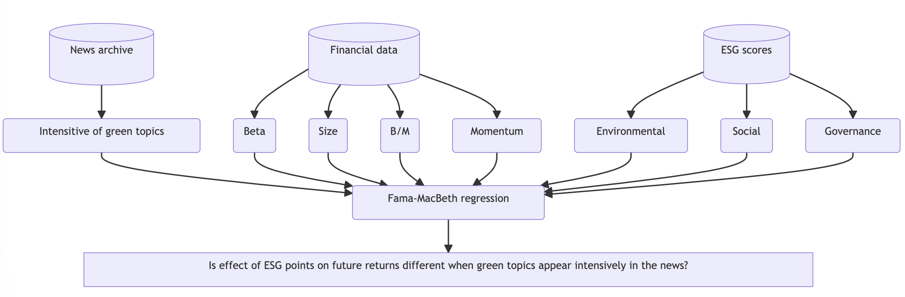

Our recent article in the Financial and Economic Review investigates the relationship between the future yield of ESG investment and the news in the media.

We analyse how ESG scores affect future returns when environmental issues receive higher media coverage. Investors might take environmental aspects into account if they are confronted with the issue of global warming more frequently in the press. We assess the prevalence of environmental issues in the media with a machine learning-based Structural Topic Modelling (STM) methodology, using a news archive published in the USA. Running Fama-MacBeth regressions, we find that in periods when the media actively report on environmental issues, ESG scores have a significant negative impact on future returns, whereas, in months when fewer such articles are published, investors do not take sustainability measures into account, and ESG scores have no explanatory power.